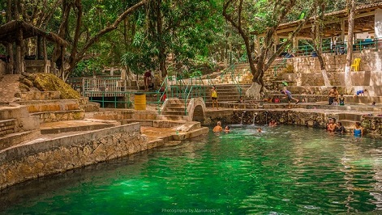
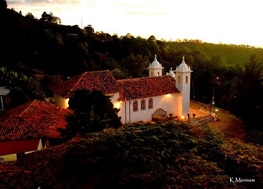

Descubre las maravillas de Honduras...


Aguas termales de Gracias, Lempira

Las Aguas Termales de Gracias, departamento de Lempira son una de las principales atracciones de este bello Municipio de Honduras.
Porque es uno de los sitios turísticos más visitados de Gracias y el sitio de aguas termales más famoso de Honduras y también reconocido a nivel internacional las aguas termales de Gracias ocupan el séptimo lugar en la lista de las 30 Maravillas de Honduras.
La ciudad colonial de Gracias es la cabecera del departamento de Lempira y se ubica en la zona occidental de Honduras, a una distancia aproximada de 270 kilómetros de la ciudad de Tegucigalpa.
Gracias es muy visitada por su gran riqueza natural, histórica y cultural: es uno de los municipios más antiguos de Honduras, en sus cercanías se encuentra el majestuoso Parque Nacional Montana de Celaque y fue Sede de la Real Audiencia de los Confines en 1544, y además de esto claro esta, por sus legendarias aguas termales.

Perfil del Autor
"Go travel!" es el singular nombre del blog que maneja Matilde Ramos, una joven hondureña que además de ser Travel Blogger, se ha convertido en una embajadora del turismo catracho, al revelar la belleza del país en su cuenta de Instagram.
Santa Lucía, Francisco Morazán

Santa Lucia es uno de los destinos turísticos preferidos de quienes visitan la capital del país, con un clima templado, la aldea principal permite ser recorrida a pie cómodamente empezando por su laguna llena de vida, patos y tortugas la llaman su hogar y se pasean tranquilamente entre los visitantes haciendo que la experiencia sea aun mas entretenida, el pueblo esta lleno de miradores que permiten una vista sublime de la capital del país, acogedores Cafes se encuentran al alcance en dichos miradores y esa es una oportunidad extraordinaria para disfrutar de los mejores cafes de la region.
El municipio colinda al norte, sur y oeste con el municipio de Distrito Central, y al este con el municipio de Valle de Ángeles. La cabecera Municipal está situada en la cima de la montaña de su nombre, a 1180 metros sobre el nivel del mar y a sólo 11 km de la capital del país, Tegucigalpa.